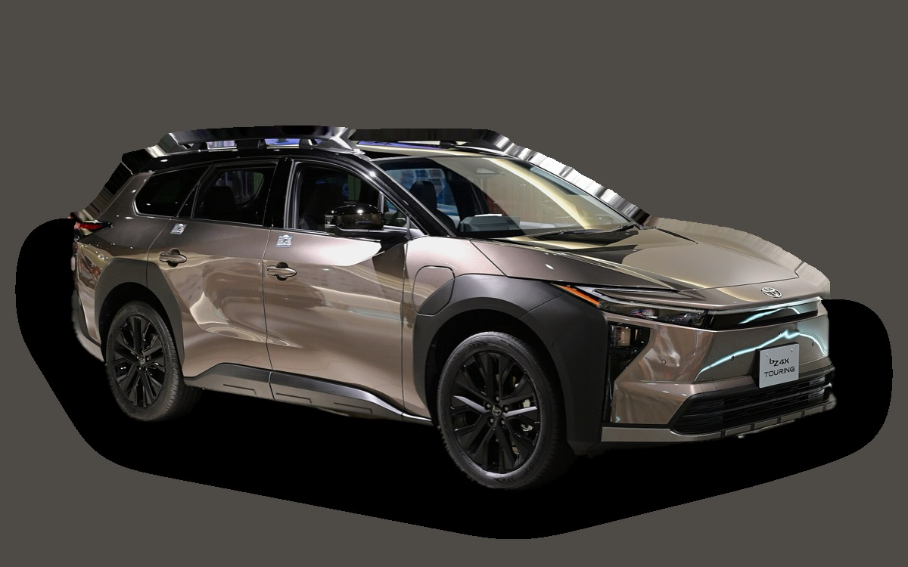

Vad kostar en Toyota bZ4X per månad?
En Toyota bZ4X från 2023 kostar cirka 3 270 kr i månaden, allt inräknat.
3 270 krper månad, årsmodell 2023
330 000 krpris, årsmodell 2023
477 000 krnypris från
Bprisvärdhetsbetyg (2023)


Månadskostnad per årsmodell
| Årsmodell | Version i beräkningen | Pris | Per månad | Betyg |
|---|---|---|---|---|
| 2026 | FWD 71 kWh, Active | 477 000 kr | 4 689 kr | D |
| 2023 | FWD 71 kWh, Active | 330 000 kr | 3 270 kr | B |
Räknat på 5 års ägande och 1 250 mil per år, med bränslepriser från 2026-10-22. Månadskostnaden innehåller värdeminskning, drivmedel, service och reparationer, försäkring och fordonsskatt.
Så fördelas kostnaden för en 2023:a
- Värdeminskning: 2 031 kr/mån
- Drivmedel: 426 kr/mån
- Service och reparationer: 232 kr/mån
- Försäkring: 551 kr/mån
- Fordonsskatt: 30 kr/mån
Begagnatpriser i annonser
| Årsmodell | Medianpris | Annonser | Typiskt miltal |
|---|---|---|---|
| 2026 | 549 000 kr | 17 | 800 mil |
| 2025 | 469 900 kr | 15 | 1 400 mil |
| 2024 | 424 000 kr | 6 | 3 400 mil |
| 2023 | 332 400 kr | 14 | 5 800 mil |
| 2022 | 359 400 kr | 6 | 6 900 mil |
Medianpriset i svenska annonser per årsmodell i oktober 2026 (källa: Blocket, AutoUncle, BilKoll). Annonspriser är utgångspriser, och slutpriset kan bli lägre.
Motorer och versioner
| Motor | Drivmedel | Effekt | 0–100 km/h | Förbrukning (WLTP) | Räckvidd | Årsmodeller | Pristillägg |
|---|---|---|---|---|---|---|---|
| FWD 71 kWh | El | 204 hk | 8,4 s | 16,5 kWh/100 km | 500 km | från 2022 | – |
| AWD 71 kWh | El | 218 hk | 6,9 s | 17,5 kWh/100 km | 460 km | från 2022 | +15 100 kr |
- Utrustning: Active, Executive (+90 000 kr)
Fakta
- Kaross
- SUV
- Årsmodeller
- sedan 2022
- Nypris från
- 477 000 kr
- Bagage
- 452 liter
- Euro NCAP
- 5 av 5 stjärnor
- Nybilsgaranti
- 10 år
- Driftsäkerhet
- 4 av 5
- Helförsäkring, uppskattning
- 8 700 kr/år
- Service, uppskattning
- 2 400 kr/år
Fördelar och nackdelar
Fördel
Tio års garanti och bra komfort.
Nackdel
Långsam snabbladdning och snabb värdeminskning.
Liknande bilar
 Skoda Enyaq3 290 kr/mån som 2023:a
Skoda Enyaq3 290 kr/mån som 2023:a Nissan Juke3 291 kr/mån som 2023:a
Nissan Juke3 291 kr/mån som 2023:a Volkswagen ID.43 312 kr/mån som 2023:a
Volkswagen ID.43 312 kr/mån som 2023:a Tesla Model Y3 315 kr/mån som 2023:a
Tesla Model Y3 315 kr/mån som 2023:a Skoda Kamiq3 200 kr/mån som 2023:a
Skoda Kamiq3 200 kr/mån som 2023:a Toyota Corolla Cross3 344 kr/mån som 2023:a
Toyota Corolla Cross3 344 kr/mån som 2023:a
Uppdaterad 2026-10-28 · annonsdata okt 2026